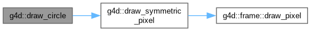
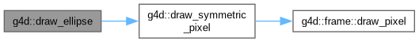
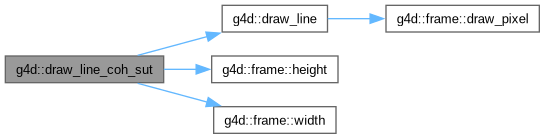
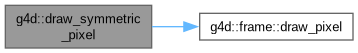

- Generated by
 1.16.1
1.16.1
|
graphics4dummies 0.1
|
Namespaces | |
| namespace | detail |
Classes | |
| class | app |
| Owns the window, renderer and frame, and runs the main loop for a list of scenes. More... | |
| class | avl_tree |
| A self-balancing (AVL) binary search tree that draws itself. More... | |
| class | frame |
| A frame class that stores every pixel on screen as a 32 bit unsigned int buffer, which is converted into a texture and rendered every frame. More... | |
| struct | text_style |
| Look of a piece of text. All spacing values are in unscaled font pixels. More... | |
| struct | text_extent |
| Size in pixels of a rendered block of text. More... | |
| class | text_raster |
| Rasterizes strings into a g4d::frame using a g4d::font. More... | |
| class | raster_tree |
| A binary search tree that lays itself out and draws itself into a g4d::frame. More... | |
| class | renderer |
| shows a CPU pixel buffer on screen using one texture and a fullscreen triangle. More... | |
| class | window |
| GLFW window with an OpenGL 3.3 core context, with glad already initialised. More... | |
| class | playground |
| class | scene |
| scene which will be used by the app to render n screen More... | |
| class | tree_scene |
| Type a number and press ENTER to insert it into the tree. Press TAB to switch between insert mode (green prompt) and delete mode (red prompt). BACKSPACE edits the number. More... | |
| class | font |
| A fixed-cell bitmap font loaded from a glyph sheet (one PNG holding a grid of equally sized glyph cells) and a manifest. More... | |
| struct | circle |
| struct | ellipse |
| struct | line |
| struct | tree_node |
| Plain binary search tree node. More... | |
| struct | node_AVL |
| AVL tree node: a tree_node plus a balance factor. More... | |
Concepts | |
| concept | TreeType |
| Any tree derived from raster_tree<V, Node>: raster_tree<V>, avl_tree<V>, ... The node type is deduced from Tree::node, so only the value type is named. Use it as TreeType<int> tree_type, which means TreeType<tree_type, int>. | |
| concept | tree_node_type |
| What raster_tree needs from a node type N holding values of type T: value, position (with int x and y), modifier, children left and right that are N*, and construction from a value with N{value}. | |
Enumerations | |
| enum class | shape_type { st_circle = 0 , st_ellipse = 1 , st_line = 2 } |
Functions | |
| void | draw_symmetric_pixel (frame &f, int x, int y, int cx, int cy, uint32_t color, bool symm8=false) |
| Draws 8 symmetric pixels about cx and cy. | |
| void | draw_circle (frame &f, int cx, int cy, size_t r, uint32_t color) |
| Draws a circle of radius r around the given center. | |
| void | draw_ellipse (frame &f, int cx, int cy, int h, int w, uint32_t color) |
| Draws an ellipse of height: 2 * h and width: 2 * w around the given center. | |
| void | draw_line (frame &f, int x1, int y1, int x2, int y2, uint32_t color) |
| Draws a line on the frame buffer. | |
| void | draw_line_coh_sut (frame &f, int x1, int y1, int x2, int y2, uint32_t color) |
| Draws a clipped line on the frame buffer using Cohen Sutherland line clipping algorithm. | |
| void | draw_line_cyr_bec (frame &f, int x1, int y1, int x2, int y2, uint32_t color) |
| Draws a clipped line on the frame buffer using Cyrus Beck line clipping algorithm. | |
|
strong |
| void g4d::draw_circle | ( | frame & | f, |
| int | cx, | ||
| int | cy, | ||
| size_t | r, | ||
| uint32_t | color ) |
Draws a circle of radius r around the given center.
| f | Reference to the frame buffer |
| cx | Pixel position on the horizontal axis of the center |
| cy | Pixel position on the vertical axis of the center |
| r | Radius of the circle |
| color | Color of the circle in 0xAARRGGBB format |

| void g4d::draw_ellipse | ( | frame & | f, |
| int | cx, | ||
| int | cy, | ||
| int | h, | ||
| int | w, | ||
| uint32_t | color ) |
Draws an ellipse of height: 2 * h and width: 2 * w around the given center.
| f | Reference to the frame buffer |
| cx | Pixel position on the horizontal axis of the center |
| cy | Pixel position on the vertical axis of the center |
| h | Vertical half length of ellipse |
| w | Horizontal half length of ellipse |
| color | Color of the circle in 0xAARRGGBB format |

| void g4d::draw_line | ( | frame & | f, |
| int | x1, | ||
| int | y1, | ||
| int | x2, | ||
| int | y2, | ||
| uint32_t | color ) |
Draws a line on the frame buffer.
| f | Reference to the frame buffer |
| x1 | Pixel position on the horizontal axis of the start point |
| y1 | Pixel position on the vertical axis of the start point |
| x2 | Pixel position on the horizontal axis of the end point |
| y2 | Pixel position on the vertical axis of the end point |
| color | Color of the line in 0xAARRGGBB format |
| void g4d::draw_line_coh_sut | ( | frame & | f, |
| int | x1, | ||
| int | y1, | ||
| int | x2, | ||
| int | y2, | ||
| uint32_t | color ) |
Draws a clipped line on the frame buffer using Cohen Sutherland line clipping algorithm.
| f | Reference to the frame buffer |
| x1 | Pixel position on the horizontal axis of the start point |
| y1 | Pixel position on the vertical axis of the start point |
| x2 | Pixel position on the horizontal axis of the end point |
| y2 | Pixel position on the vertical axis of the end point |
| color | Color of the line in 0xAARRGGBB format |

| void g4d::draw_line_cyr_bec | ( | frame & | f, |
| int | x1, | ||
| int | y1, | ||
| int | x2, | ||
| int | y2, | ||
| uint32_t | color ) |
Draws a clipped line on the frame buffer using Cyrus Beck line clipping algorithm.
| f | Reference to the frame buffer |
| x1 | Pixel position on the horizontal axis of the start point |
| y1 | Pixel position on the vertical axis of the start point |
| x2 | Pixel position on the horizontal axis of the end point |
| y2 | Pixel position on the vertical axis of the end point |
| color | Color of the line in 0xAARRGGBB format |
| void g4d::draw_symmetric_pixel | ( | frame & | f, |
| int | x, | ||
| int | y, | ||
| int | cx, | ||
| int | cy, | ||
| uint32_t | color, | ||
| bool | symm8 = false ) |
Draws 8 symmetric pixels about cx and cy.
| f | Reference to the frame buffer |
| x | Horizontal pixel position of NE pixel |
| y | Vertical pixel position of NE pixel |
| cx | Circle center on horizontal axis |
| cy | Circle center on vertical axis |
| color | Color of the 8 pixels |
| symm8 | Whether to draw 8-way symmetry (true for circle, false for 4-way ellipse) |
